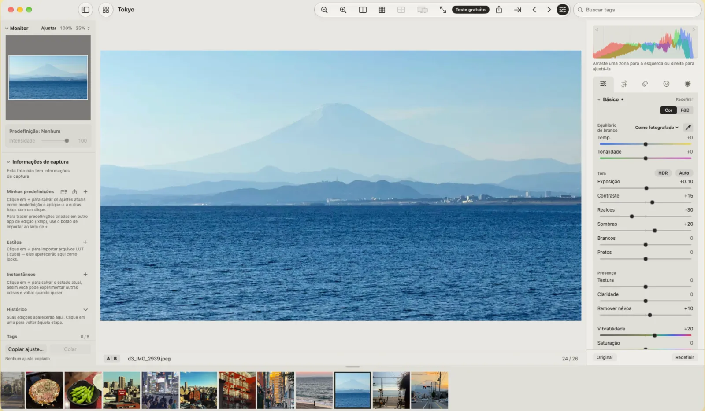

RAW
Os arquivos RAW abrem com cor e brilho ajustados para a câmera que os fotografou.

132 perfis de câmera incluídos
Fujifilm, Sony, Canon, Nikon, Hasselblad, DJI e iPhone, cada um ajustado em cor e brilho.
Câmeras novas sem atualizar o app
Os Ajustes procuram um novo pacote de perfis, na hora ou toda semana, e os novos perfis valem para as próximas fotos que você abrir.
Modos que protegem os realces
Fotos feitas com a prioridade de tons claros da Canon ou com DR200/DR400 da Fujifilm abrem com o brilho que você viu na câmera.
Todos os formatos RAW comuns
CR3, CR2, NEF, ARW, RAF, RW2, ORF, DNG, 3FR, IIQ e mais. No Mac, se o macOS ainda não lê uma câmera muito nova, o Butter Edit edita o JPEG incorporado e avisa você.
JPEG, HEIC e mais, com as mesmas ferramentas
JPEG, HEIC/HIF, PNG, TIFF, WebP e AVIF ganham os mesmos controles, máscaras e predefinições do RAW.
Editor RAW rápido por pastas
Download gratuito, com 30 dias de teste grátis de todos os recursos. Requer macOS 26 ou posterior. Windows 10 (64 bits) ou posterior.